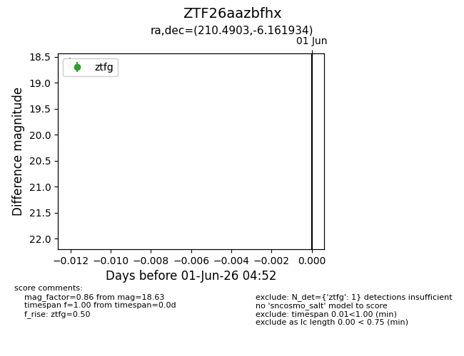
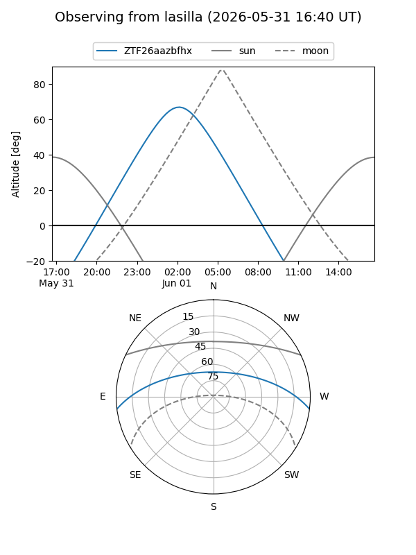
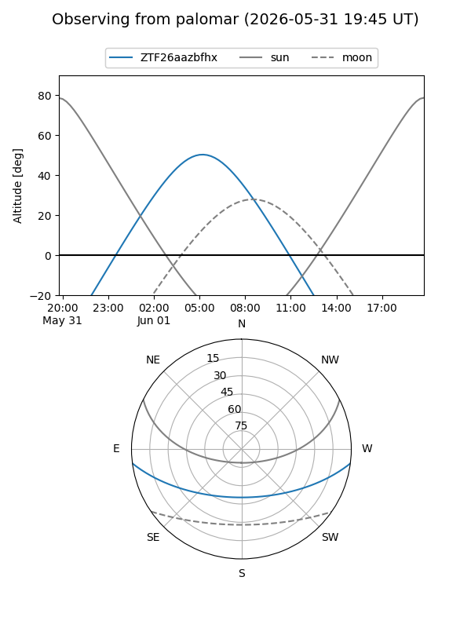

ZTF26aazbfhx
Target ZTF26aazbfhx at 2026-06-01 04:53
Aliases and brokers:
lsst-FINK: link
lsst-Lasair: link
lsst-ALeRCE: link
ztf-FINK: link
ztf-Lasair: link
ztf-ALeRCE: link
alt names
ZTF26aazbfhx (ztf,fink_ztf)
Coordinates:
equatorial (ra, dec) = 210.4903,-6.16193
equatorial (HMS+DMS) = 14:01:57.68,-06:09:42.96
galactic (l, b) = (332.6487,+52.59278)
Flags:
Photometry:
last ztfg=18.63
1 ztfg detections
Lightcurve

Visibility


Additional plots